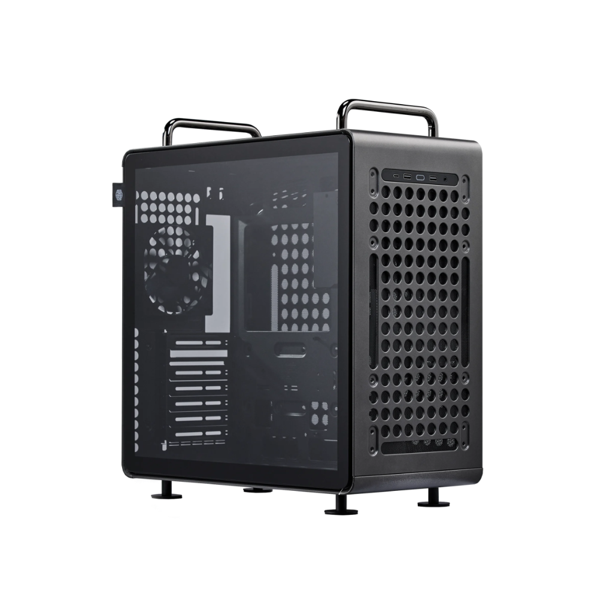
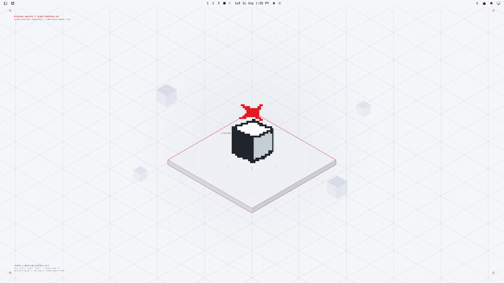

Chasis modular de acero perforado con asas de transporte, refrigeración abierta y tornillos estándar. Diseñada para trabajar, crear y durar.

Preconfigurado por el taller con el tema oficial Lizarbe Light: estética técnica inspirada en planos isométricos, iconografía en rojo de taller y mosaico dinámico para tus proyectos.

Las ventanas activas se resaltan con un filete rojo de 1px (#F62424). Sabes exactamente dónde está tu foco sin sombras exageradas ni distracciones.
Carpetas y accesos directos vectoriales con el sello visual del taller: limpios, de alto contraste sobre fondo blanco y sin bloatware visual.
Acceso instantáneo con Super + Enter a herramientas CLI, reproductores tipo CLIAMP, git y soporte para agentes de IA locales.
"Computadoras de piezas soldadas, sistemas llenos de telemetría y un sistema operativo que no te pertenece y con el poder de decir cuándo ya no podrás usarlo. La línea de computadoras Lizarbe trata de cambiar aquello; computadoras 100% personales, duraderas y con el control total del usuario."
La apertura de la máquina no invalida la garantía.
Ábrela, límpiala, agrégale memoria RAM o cambia de tarjeta gráfica cuando quieras. Es tuya.
Mismo chasis modular con asas, mismo sistema Omarchy, graduadas según la exigencia de tus proyectos.
Para programar, escribir, navegar y estudiar con absoluta fluidez. Consumo mínimo de energía y sin demoras.
El punto de equilibrio perfecto. Desarrollo de software, diseño gráfico, edición multimedia y multitarea intensiva.
Poder masivo para creadores 3D, animación, compilaciones pesadas y ejecución de modelos de IA locales (LLMs) con Ollama.
La tecla Super es la tecla Windows/Cmd de tu teclado.
Sin call centers, sin bots automatizados. Tienes contacto directo con Leonardo Lizarbe para cualquier consulta sobre tu máquina, expansión de piezas o dudas del sistema.